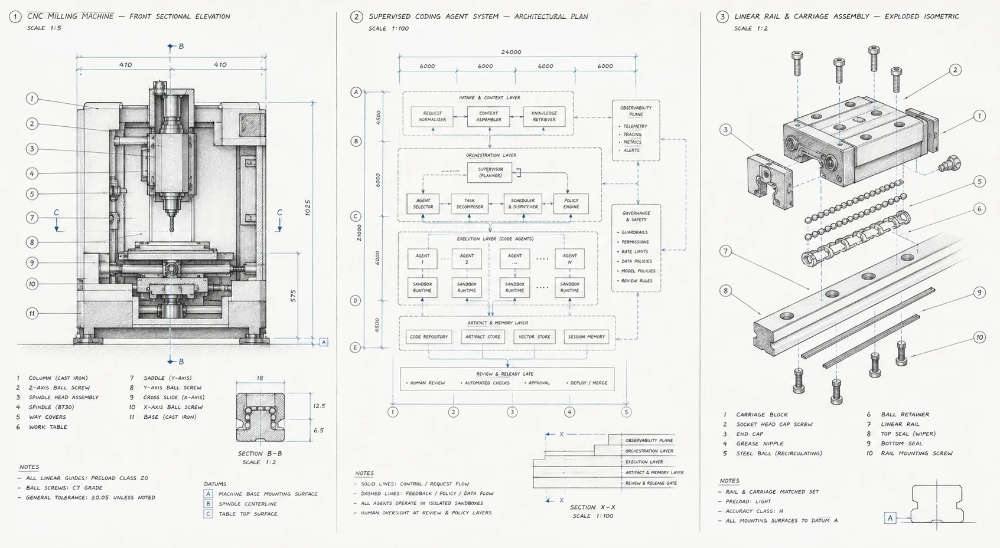

Require proof
Keep private execution history and published work connected. Standard jobs include independent review, and GitHub follow-ups repair qualifying CI failures and review feedback.
Give agents a task. Review the result.
Start with an issue link or a description. Choose the Standard pipeline or a Single-agent job, track progress, and review the pull request on GitHub.

A single agent can write code. A reliable system also needs to define the work, review the result, handle failures, run checks, and keep a record of what happened.
Keep private execution history and published work connected. Standard jobs include independent review, and GitHub follow-ups repair qualifying CI failures and review feedback.
Configure Codex, Claude Code, or another command-line harness on the worker. Keep agent configuration independent of the projects where jobs run.
Shared role prompts are edited in Agents and snapshotted per attempt. Lower-level command and executor definitions remain in operator-owned TOML files.
Standard jobs run Triage, optional Spec and approval, Build, then independent Review. Findings return to the same branch and PR for up to three repair rounds. Single-agent jobs run a task end to end.
Edit Markdown role prompts in Agents. Choose a project when submitting work; the agent configuration is reusable across repositories.
Review a stage’s saved result. Approve the next step or send feedback and review a revised version.
Execution state and internal handoffs stay private. Requested files, specifications, and code are delivered through the task’s GitHub pull request.
Triage skips a specification for clear, small tasks. Consequential decisions pause for your approval. Build and repairs reuse one branch and pull request.
Inspect the request; add Spec when needed
Implement and verify the requested change
Check independently and repair findings
Triage → optional Spec and approval → Build → independent ReviewPrefer one agent? Choose Single agent. Save operational jobs in Automations and run them manually or on a schedule. Repository maintenance triages issues and PRs and can auto-merge only qualifying independently reviewed Machinist documentation PRs under enforced branch protections.
Run your first jobMachinist stores ordered events, terminal outcomes, duration, and reported token use. It also includes a focused evaluation for the GitHub issue lifecycle. Broader outcome scoring and configuration comparison are planned, but are not part of the product yet.
Local and VM workers run Codex or Claude Code. Kubernetes runs native Codex in gVisor Jobs, with GitHub publication outside agent Pods. Direct commands can also invoke another configured executable.
# Bring your own harness and model aliases
[executors.codex]
command = ["codex", "exec", "--json", "--model={{machinist.model}}", "--sandbox", "danger-full-access", "-"]
models = { fast = "gpt-5.6-luna", deep = "gpt-5.6-sol" }
[executors.your_agent]
command = ["your-agent", "run", "--model={{machinist.model}}"]One Go binary contains the CLI, control plane, managed worker, private SQLite history, and browser interface. Run the control plane locally, on a VM, or in GKE. No Machinist cloud account is required.
Compile one local binary from the open-source repository.
Create defaults and a private runtime. Keep credentials and execution history outside the repository.
Open the printed URL, connect GitHub, select a project and agent, and verify PONG.
Start with a small issue that has a clear result. Machinist will plan it, build it, review it, wait for checks, and hand the pull request back to you.